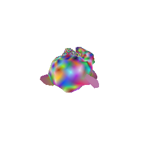
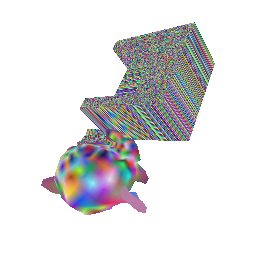
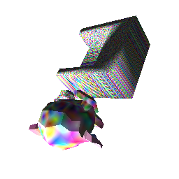
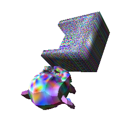
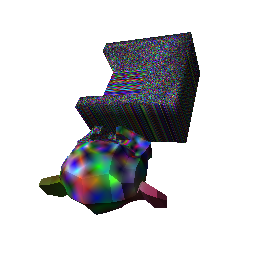
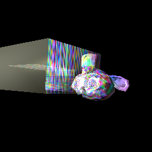
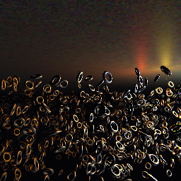
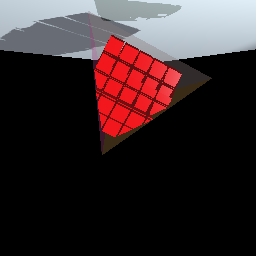
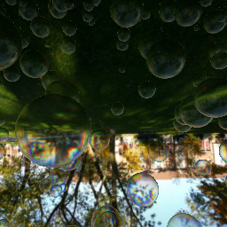

Machine Fingerprinting

| id | Picture | Text |
|---|---|---|
| 0 |  |
This is a test for varying color in fragment shader. This is a larger cube compared with test 1. The camera position is [0, 0, -5] |
| 1 |  |
This is a test like test 0. This is a smaller test, Mainly for camera position test. The camera position is [-1, -4, -10] |
| 2 |  |
This is a test for lines and curve. Without anti-aliasing. The points for lines is {[-0.7,-0.1,0], [-0.3,0.6,0]}, {[-0.3,-0.3,0], [0.2,0.6,0]}, {[0.3,-0.3,0], [0.7,0.6,0]} The function of curve is y = 256 - 100 * cos(2.0 * PI * x / 100.0) + 30 * cos(4.0 * PI * x / 100.0) + 6 * cos(6.0 * PI * x / 100.0); |
| 3 |  | This test is for texture and model. Infact, this test is mainly for model test. this model is part of the model of test 4. This texture is randomly generated |
| 4 |  | This test is for texture and model, like the test 3. Infact, this test is a combination of model from test 3 and the simple model. This texture is randomly generated |
| 5 |  |
This test is for light. This is a Susan model version. The Light is a point light, the position of light is [3.0, -4.0, -2.0], the color(how strong it is) of light is [2, 2, 2], The camera position is [0,0,-7] |
| 6 |  | This test is for light. This is a Susan model plus simple model version. The Light is a point light, the position of light is same as test 5 |
| 7 |  | This test is for point light plus specular light. The model is the combination of Susan model and simple model. The position of both the specular and diffuse point light is [0.8, -0.8, -0.8], the diffuse point light RGB is [0.75, 0.75, 1.0], the specular light RGB is [0.8, 0.8, 0.8], the camera position is [0, 0, -7] |
| 8 |  | This test is for the overlap of two textures. The light is same as test 7, the only difference is the texture is the addition of two randomly generated textures |
| 9 |  | We have 10 tests for alpha test. The light condition is same as test 8. The model is the combination of Susan and Simple. The alpha value of 9 tests is: 1, 0.09, 0.1, 0.11, 0.39, 0.4, 0.41, 0.79, 0.8, 0.81 |
| 10 |  |
This test is for anti-aliasing. All of the features is same as the 0.81 alpha value of test 9. But this is a anti-aliasing version |
| 11 |  |
This test is complex light test. Including moving point lights, different light color, many models, and reflection |
| 12 |  | This is a anti-aliasing version of test 11 |
| 13 |  | This test uses a static model and moving clipping planes to create the illusion of a moving model |
| 14 |  | This test is for light, reflection, texture cube and jpg texture. We use a texture cube; the bubbles reflect and refract different parts of the texture cube, making full use of all six textures |
| 15 |  |
This test uses a variety of compressed textures within the DDS compressed texture format. Formats used: dxt_1 with mip and nomip dxt_3 with mip and no mip dxt_5 with mip and no mip argb with mip and nomip |
| 16 |  |
This test uses a variety of compressed textures within the PVR compressed texture format (this is a mobile only format)
Formats used: 4bpp_rgb with mip and nomip 4bpp_rgb_v3 with mip and no mip 2bpp_rgb with mip and no mip 2bpp_rgb_v3 with mip and no mip |
| 17 |  |
This test uses a depth texture and a float texture to do shadow mapping. A brute force anti-aliaser is used to soften the edges of the shadow map |
| 18 |  |
6 tests for video |